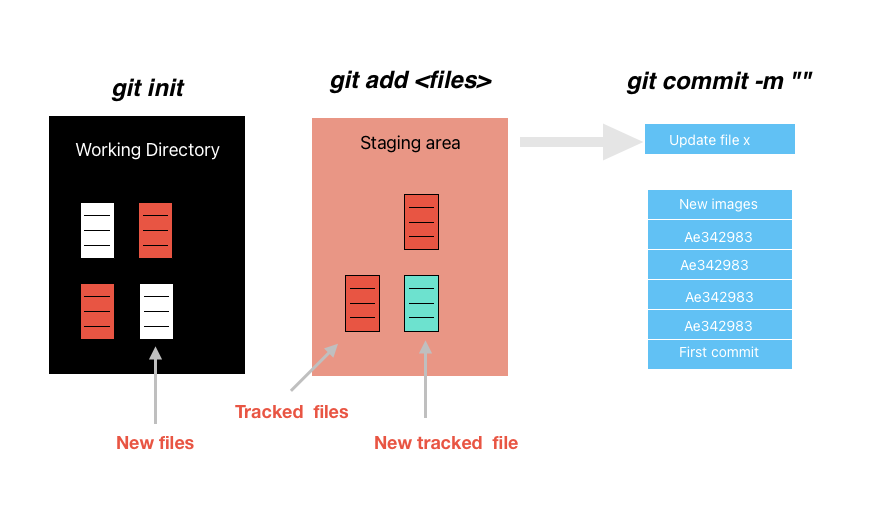

☐ Edit '/Users/tb186/.Renviron'.☐ Restart R for changes to take effect.Week 3: Intro to Python - OOP, Data Types, Control Statements and Functions
☐ Edit '/Users/tb186/.Renviron'.☐ Restart R for changes to take effect.Problem Set 1
Quick review of Git and remotes with Github
In-class exercise about Git
Introduction to Python
Python as an Object-Oriented Programming Language
Data Types in Python
Next week (likely):
Control statements
Functions

Most times, you will use git integrated with Github.
Github allows multiple researchers to write and share code at the same time.
This is my workflow for github when starting a New Project. Before you write any code:
Go to your github, and create a new repository
Open your terminal, and clone the project
cd intro your new local folder
# clone
git clone <url>
#Move your working directory to this new folder
cd <project-directory>
#Write code!Track your changes:
git add . Commit:
git commit -m 'describe your commit'Push the changes in your local repository to GitHub:
git push
# or with branch
git push -u origin [branch-name] When you do this for this first time, you need to set yo your identity
git config --global user.name "Your Name"
git config --global user.email "your-email@example.com"Git will ask:
To keep up with your colleagues work, you need to first pull their updates from the git repo.
# go to your repo
cd <gitrepo>
# pull the changes
git pullSee this tutorial
check the discussion about .gitignore in the lecture notes.
you might need to set up an personal token to push things on github, see here
play around with gitub: readme, directories, and issues.
Click here to setup your github classroom and do the in-class from last week for you to practice.
15:00
Git should be new for you. Don’t feel desperate if you struggling with git. Most people do.
Google every time you have a question. That’s a big part of being a data scientist.
Check the Cheat sheet and your lecture notes
In most Python introductions out there, you would start with:
Python as a calculator
Data Types in Python
Objects
We will take a different route starting with a deeper understanding of object-oriented programming
Python is an object-oriented programming language (OOP).
R is a functional programming language
# call library
import pandas as pd
# Using a Pandas Series method (OOP)
s = pd.Series([1, 2, 3, 4, 5])
# create a series object. You use a methods from this object to take the mean
s.mean()vec <- c(1, 2, 3, 4, 5)
mean(vec)= is the assignment operator in Python. (Different from R)
x = 4Action 1: A reference is assigned to an object, with an id number in memory
id(x)4794917896Action 2 An object type (class) is defined at run time
type(x)<class 'int'>Action 3: Object’s class is instantiated upon assignment. An object is an instance of a particular class.
# what is the class?
type(x)<class 'int'># Access methods (behaviors) using .
x.bit_length()3# see all methods
dir(x)['__abs__', '__add__', '__and__', '__bool__', '__ceil__', '__class__', '__delattr__', '__dir__', '__divmod__', '__doc__', '__eq__', '__float__', '__floor__', '__floordiv__', '__format__', '__ge__', '__getattribute__', '__getnewargs__', '__getstate__', '__gt__', '__hash__', '__index__', '__init__', '__init_subclass__', '__int__', '__invert__', '__le__', '__lshift__', '__lt__', '__mod__', '__mul__', '__ne__', '__neg__', '__new__', '__or__', '__pos__', '__pow__', '__radd__', '__rand__', '__rdivmod__', '__reduce__', '__reduce_ex__', '__repr__', '__rfloordiv__', '__rlshift__', '__rmod__', '__rmul__', '__ror__', '__round__', '__rpow__', '__rrshift__', '__rshift__', '__rsub__', '__rtruediv__', '__rxor__', '__setattr__', '__sizeof__', '__str__', '__sub__', '__subclasshook__', '__truediv__', '__trunc__', '__xor__', 'as_integer_ratio', 'bit_count', 'bit_length', 'conjugate', 'denominator', 'from_bytes', 'imag', 'numerator', 'real', 'to_bytes']Instantiation: When we create a object, we are creating an instance of this class.
Inheritance: Every time we create an object, the objects inherits a class.
A class is a blueprint holding of the properties of a particular data structure.
An instance is a realization of a particular class. This instance inherits the characteristics of its class.
Components: Classes have two major components:
Attributes: these are constant features, data, a characteristic of the broader class
Methods: these are actions, behaviors of this class. functions
Polymorphism: Both attributes and methods are accessed through . function, conditional on the class
class Example():
def __init__ (self, name):
self.name = name
def hello(self):
print('Hi, I am ' + self.name)# Instatiate
me = Example(name="Tiago")
type(me)<class '__main__.Example'>me.name'Tiago'me.hello() Hi, I am TiagoPython comes with a number of built-in data types. Two major data type groups in Python:
Scalar types: hold one piece of information, like a digit.
Collection types: hold multiple pieces of information
There are two ways of instantiating a data class in Python:
Literals: syntactic representation in Python, e.g. []
Constructors: class constructors, e.g. list()
| Type | Description | Example | Literal | Constructor |
|---|---|---|---|---|
int |
integer types | 4 |
x = 4 |
int(4) |
float |
64-bit floating point numbers | 4.567 |
x = 4.567 |
float(4) |
bool |
boolean logical values | True |
x = True |
bool(0) |
None |
null object (serves as a valuable place holder) | None |
x = None |
| Type | Description | Example | Mutable | Literal | Constructor |
|---|---|---|---|---|---|
list |
heterogeneous sequences of objects | [1,"2",True] |
✓ | x = ["c","a","t"] |
x = list("cat") |
str |
sequences of characters | "A word" |
✘ | x = "12345" |
x = str(12345) |
tuples |
heterogeneous sequence of objects | (1,2) |
✘ | x = (1,2) |
x = tuple([1,2]) |
sets |
unordered collection of distinct objects | {1,2} |
✓ | x = {1,2} |
x = set([1,2]) |
dicts |
associative array of key/value mappings | {"a": 1} |
keys ✘ values ✓ |
x = {'a':1} |
x = dict(a = 1) |
Why, different from R, I should use function(obj)?
Tuples and Lists are pretty much the same. But tuples are more computationally efficient (storage and speed in accessing it) than lists. Why do you think this is the case?
Assume I have this dictionary my_dict = {'a': 4, 'b': 7, 'c': 9.2}. If I tried to access the first element of the dictionary with my_dict[0], Python will throw me an error. Why?
Let’s practice with lists first. One way to explore data structures is to learn their methods. Check all the methods of a list by running ‘dir()’ on a list object. Let’s explore these functions using the following list object, by answering the below questions. See here for list methods:
list_exercise = ["Ramy", "Victorie", "Letty", "Robin", "Antoine", "Griffin"] Let’s do a similar exercise with Dictionaries. Consider the dictionary below. See here for dictionary methods:
dict_exercise = {"Ramy": "India",
"Victorie":"Haiti",
"Letty":"England",
"Robin":"Canton",
"Antoine":"Nigeria",
"Griffin":"China"}
dict_exerciseLet’s now play around with some string methods. See the string below from the book “Babel:An Arcane History”. See here for string methods:
babel = "That's just what translation is, I think. That's all speaking is. Listening to the other and trying to see past your own biases to glimpse what they're trying to say. Showing yourself to the world, and hoping someone else understands."10:00
We will go over some concepts that are very general for any programming language.
Using logical operators for comparisons.
Control the behavior of code when iterating using control statements.
Explore iterating through containers using loops
Defining functions to make code more flexible, debuggable, and readable. (Probably for next week)
| Operator | Property |
|---|---|
== |
(value) equivalence |
> |
greater than |
< |
strictly less than |
<= |
less than or equal |
> |
strictly greater than |
>= |
greater than or equal |
!= |
Not Equals |
is |
object identity |
is not |
negated object identity |
in |
membership in |
not in |
negated membership in |
Any programming language needs statements that controls the sequence of execution of a particular piece of code.
Definition: Conditional execution.
if <logical statement>:
~~~~ CODE ~~~~
elif <logical statement>:
~~~~ CODE ~~~~
else:
~~~~ CODE ~~~~Definition: Taking one item at a time from a collection. We start at the beginning of the collection and mover through it until we reach the end.
In python, we can iterate over:
lists
strings
dictionaries
file connections
grouped pandas df
# create a list
my_list = [1, 2, 3, 4, 5]
# iterate with a for loop:
for m in my_list:
print(m)1
2
3
4
5# while loops
x = 0
while x < 5:
print("This")
x += 1This
This
This
This
This